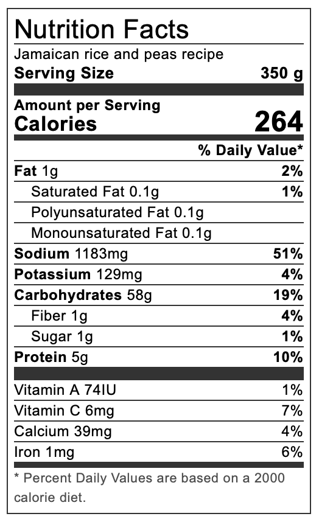

Jamaican rice and peas

The heart of jamaican sunday dinner
The heart of jamaica in a bowl and ready in less than 1 hour! Enjoy this delicious dish with a side of plantains, or spice it up with my
brown stew chicken.
Hailing from the heart of jamiaca and combining simple ingredients with carribean style, this dish is sure to be a family favorite!
Simple ingredients made delicious
Combining together rice, kidney beans, herbs, and spices, with a can of coconut milk makes this an easy dish to whip up in no time. The perfect base for any curry or stew.
Ingredients
- 100 g Dry red kidney beans(peas)
- 231 ml Homemade coconut milk
- 263 g Long grain rice
- 1/2 Red oninon Chopped
- 2 Garlic cloves Crushed
- 1 Stalk scallions Chopped
- 4 Sprig of thyme
- 1 Scotch bonnet pepper
- Ginger a very small piece
- 1 tsp Salt
- 1.12 L Water
Steps
- Wash the dry kidney beans. In freshwater, leave to soak for at least two hours, preferably overnight.
- In a pressure cooker, add the soaked beans, garlic, pimento berries (allspice), ginger and salt with about 4 ½ to 5 cups of water to pressure cook for 20 minutes. If you don't have a pressure cooker and still wish to use dry kidney beans, cook for 45-50 minutes.
- Once the beans are cooked, add the coconut milk, thyme, scallion, onion, and a whole scotch bonnet pepper. Cover the pot and bring it to a boil. At this point, taste to see if it seasoned to your liken.
- Wash and add the rice. Return the lid to the pot and bring it to a boil. Turn the heat down to low and let the rice steam until all the water evaporates. Turn the feat off and let the rice sit for another 3 minutes.
- Remove the thyme stems, scotch bonnet pepper and ginger. Serve!
Cooking With Canned Beans and Coconut
- Wash and drain the kidney beans.
- Pour the beans into a pot with 1 cup of water, half-canned coconut milk, garlic, pimento berries (allspice), ginger, thyme, scallion, onion, scotch bonnet pepper and salt. At medium heat, cover and bring to a boil.
- Wash and add the rice. Return the lid to the pot and bring it to a boil. Turn the heat down to low and let the rice steam until all the water evaporates. Turn the feat off and let the rice sit for another 3 minutes.
Notes
- If you use the water from the canned kidney beans, the finished rice will have the rice vibrate colour. I have never used water from the canned beans, so I can’t say if it is a good idea or not.
- I use pink himalayan salt.
Nutiriton
